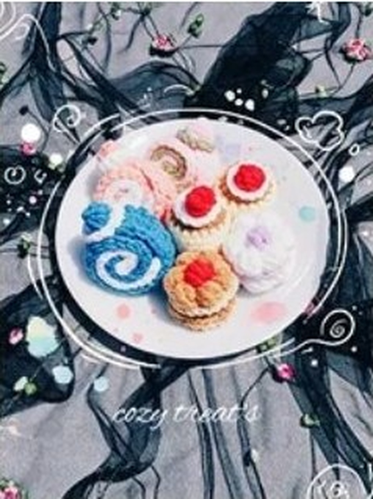

Meet the hands looping art into shape, stitch-by-stitch in Segamat, Johor.
"No repetition. No machines. Every loop tells a human story of time and patience."

Cozy Loop is a small independent crochet studio run by designer Joseph Paul in Segamat, Johor, Malaysia. Started out of a love for tactile fiber crafts, every item is looped and bound by hand.
In a world saturated with generic mass-produced items and algorithm-generated designs, we believe in the physical value of a handmade keepsake. When you purchase from Cozy Loop, you receive a piece that holds hours of focused attention, care, and quality materials.
HAND-KNITTED
CUSTOM SHADES
PENINSULAR MSIA
We use high-grade materials to ensure durability, softness, and color vibrancy.